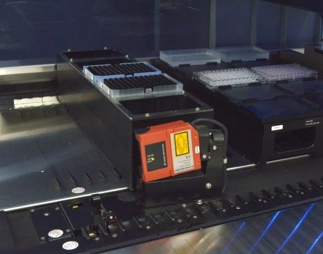

Using the autoload & 1D barcode reader#
Summary |
Image |
|---|---|
|
 Figure: Hamilton STAR Autoload system |
Background: Architecture of Hamilton STAR(let) Autoload#

Setup#
from pylabrobot.liquid_handling import LiquidHandler, STARBackend
from pylabrobot.resources import STARDeck
from pylabrobot.resources import (
TIP_CAR_480_A00,
PLT_CAR_L5AC_A00,
hamilton_96_tiprack_50uL,
Cor_96_wellplate_360ul_Fb
)
star = STARBackend()
lh = LiquidHandler(backend=star, deck=STARDeck())
await lh.setup()
# assign a tip rack carrier
tip_carrier = TIP_CAR_480_A00(name="tip_carrier")
tip_carrier[1] = tip_rack = hamilton_96_tiprack_50uL(name="tip_rack")
lh.deck.assign_child_resource(tip_carrier, rails=10)
# assign a plate carrier
plt_carrier = PLT_CAR_L5AC_A00(name="plt_carrier")
plt_carrier[0] = plate = Cor_96_wellplate_360ul_Fb(name="plt")
lh.deck.assign_child_resource(plt_carrier, rails=30)
Note
Two starting points are possible:
Carriers have been moved directly on the deck.
Carriers have been left on the loading tray.
Here we assume we’re starting with (1) Carriers have been moved directly on the deck.
Querying autoload state#
star.autoload_installed
True
await star.request_autoload_track()
54
await star.request_autoload_type()
'ML-STAR with 1D Barcode Scanner'
Sensing carriers#
The autoload sled has a front-facing proximity sensor. This sensor can be used to scan the entire loading tray to identify whether there are any carriers currently on the loading tray:
await star.request_presence_of_carriers_on_loading_tray()
[]
Note
The autoload detects only the right-most track occupied by a carrier!
Similarly, if you only want to investigate a single position this can be done too.
await star.request_presence_of_single_carrier_on_loading_tray(
track=44
)
False
The counterpart to checking for carriers on the loading tray is checking for presence of carriers on the liquid handler’s deck:
await star.request_presence_of_carriers_on_deck()
[15, 35]
Note that we have assigned the carriers based on the left-most track they are occupying but the request_presence_of_carriers_on_deck() detects the right-most track of carriers:
tip_carrier: left-most track = 10, 6 tracks wide, right-most track 15
plt_carrier: left-most track = 30, 6 tracks wide, right-most track 35
Note
.request_presence_of_carriers_on_deck() is technically not an ‘autoload’ command.
It uses the presence sensors at the back of the STAR(let) deck to identify whether a carrier is present.
i.e. there is no autoload movement involved, and it therefore works for STAR(let)s without an integrated barcode sensor too.
Together these STAR methods enable capturing a full picture of the state of carriers on your liquid handler.
Moving autoload#
# Always ensure the carrier handler is safely tucked away during movement.
await star.move_autoload_to_save_z_position()
'C0IVid0018er00/00'
await star.move_autoload_to_track(30)
'I0XPid0020er00'
await star.park_autoload()
'I0XPid0022er00'
Basic Load & Unload#
await star.unload_carrier(tip_carrier, park_autoload_after=False)
'C0CRid0023er00/00'
await star.load_carrier(tip_carrier, park_autoload_after=False)
{'carrier_barcode': Barcode(data='08T0241707', symbology='Code 128 (Subset B and C)', position_on_resource='right'),
'container_barcodes': None}
Command Architecture for (Un)Loading & Barcode Reading#
From a firmware-perspective a carrier can be in 3 “states”:
On the deck
On the autoload belt
On the loading tray
PyLabRobot enables easy transfer between these 3 states with these STARBackend methods:

Note
We could not find a command that enables the movement sequence: deck > autoload_belt > loading_tray yet.
.unload_carrier_after_carrier_barcode_scanning() requires .load_carrier_from_tray_and_scan_carrier_barcode() to precede it.
1D Barcode reading#
There are 2 main types of 1D barcodes one a classic STAR(let) deck:
Carrier barcodes (orientation=vertical; located at the right-back of the carrier)
Container barcodes:
TipRack barcodes (orientation=horizontal)
Plate barcodes (orientation=horizontal)
Tube barcodes (orientation=vertical)
1D Barcode Symbologies#
All barcodes must follow a standard encoding scheme, i.e. a “symbology”. Before reading barcodes it is important to know what barcode symbology you are expecting to read!
The following barcode symbologies can be detected by the system:
list(star.barcode_1d_symbology_dict.keys())
['ISBT Standard',
'Code 128 (Subset B and C)',
'Code 39',
'Codebar',
'Code 2of5 Interleaved',
'UPC A/E',
'YESN/EAN 8',
'ANY 1D']
For the highest reading safety Hamilton recommends to use barcode type Code128 (subset B and C).
This is the default symbology chosen in PyLabRobot commands:
star._default_1d_symbology
'Code 128 (Subset B and C)'
However, you can directly set or change the expected barcode symbology:
The fastest way to read your barcode when your carriers are already on the deck is to move the carrier out to the identification position:
await star.set_1d_barcode_type("ISBT Standard")
star._default_1d_symbology
'ISBT Standard'
await star.set_1d_barcode_type("Code 128 (Subset B and C)")
star._default_1d_symbology
'Code 128 (Subset B and C)'
Loading with with Barcode Reading#
1D barcode reading via the autoload can only occur during carrier loading actions. So let’s first unload the carrier:
await star.unload_carrier(tip_carrier, park_autoload_after=False)
'C0CRid0029er00/00'
…and this time activate reading both (1) the carrier barcord and (2) the container barcode:
barcode_readings = await star.load_carrier(
carrier=tip_carrier,
carrier_barcode_reading=True,
barcode_reading=True,
# barcode_symbology="Code 39",
# barcode_reading_direction="horizontal",
# no_container_per_carrier=5,
park_autoload_after=False,
)
This returns a dictionary:
barcode_readings
{'carrier_barcode': Barcode(data='08T0241707', symbology='Code 128 (Subset B and C)', position_on_resource='right'),
'container_barcodes': {0: Barcode(data='18235938752776512151', symbology='Code 128 (Subset B and C)', position_on_resource='right'),
1: Barcode(data='18235938752776527151', symbology='Code 128 (Subset B and C)', position_on_resource='right'),
2: Barcode(data='18235938752776549151', symbology='Code 128 (Subset B and C)', position_on_resource='right'),
3: None,
4: Barcode(data='18235938752776513151', symbology='Code 128 (Subset B and C)', position_on_resource='right')}}
Warning
The default behaviour of the 1D barcode scanner is set to read the standard 5x tip- and plate-carrier positions. If you are reading barcodes on a different carrier (e.g. tube or trough carrier) you will have to modify the default parameters.

Warning
The 1D barcode scanner uses a (class 2) laser targeted to a fixed height.
This is especially important when reading horizontal barcodes.
The z-height of the laser (during horizonatal) barcode reading is z=219 or 119 mm above the deck surface.
If your 1D barcode is not precisely positioned at this height, the 1D barcode reader cannot read your barcode.
To facilitate this height, use “DWP” carriers/MFX plate_holders for plates >40 mm in size_z, and “MP” carriers/MFX plate_holders for plates ~15 mm in size_z.
Advanced 1D Barcode Reading#
await star.unload_carrier(tip_carrier, park_autoload_after=False)
'C0CRid0035er00/00'
Loading tray -> Autoload Belt (Carrier Barcode Reading) -> Loading Tray
await star.load_carrier_from_tray_and_scan_carrier_barcode(
tip_carrier,
# barcode_position = 4.3, # mm
# barcode_reading_window_width = 38.0, # mm
# reading_speed = 128.1, # mm/sec
)
Barcode(data='08T0241707', symbology='Code 128 (Subset B and C)', position_on_resource='right')
await star.unload_carrier_after_carrier_barcode_scanning()
'C0CAid0037er00/00'
Loading tray -> Autoload Belt (Carrier Barcode Reading) -> Deck (Container Barcode Reading)
-> same as simply .load_carrier() but split into separate components
await star.load_carrier_from_tray_and_scan_carrier_barcode(
tip_carrier
)
Barcode(data='08T0241707', symbology='Code 128 (Subset B and C)', position_on_resource='right')
reading = await star.load_carrier_from_autoload_belt(
barcode_reading=True,
park_autoload_after=False
# barcode_reading_direction = "horizontal",
# barcode_symbology = "Code 128 (Subset B and C)"
# reading_position_of_first_barcode = 63.0, # mm
# no_container_per_carrier = 5,
# distance_between_containers = 96.0, # mm
# width_of_reading_window = 38.0, # mm
# reading_speed = 128.1, # mm/secs
)
reading
{0: Barcode(data='18235938752776512151', symbology='Code 128 (Subset B and C)', position_on_resource='right'),
1: Barcode(data='18235938752776527151', symbology='Code 128 (Subset B and C)', position_on_resource='right'),
2: Barcode(data='18235938752776549151', symbology='Code 128 (Subset B and C)', position_on_resource='right'),
3: None,
4: Barcode(data='18235938752776513151', symbology='Code 128 (Subset B and C)', position_on_resource='right')}
Deck -> Autoload Belt -> Deck (with container barcode reading only)
await star.take_carrier_out_to_autoload_belt(tip_carrier)
reading = await star.load_carrier_from_autoload_belt(
barcode_reading = True,
park_autoload_after=False,
)
reading
{0: Barcode(data='18235938752776512151', symbology='Code 128 (Subset B and C)', position_on_resource='right'),
1: Barcode(data='18235938752776527151', symbology='Code 128 (Subset B and C)', position_on_resource='right'),
2: Barcode(data='18235938752776549151', symbology='Code 128 (Subset B and C)', position_on_resource='right'),
3: None,
4: Barcode(data='18235938752776513151', symbology='Code 128 (Subset B and C)', position_on_resource='right')}
await star.move_autoload_to_save_z_position()
'C0IVid0045er00/00'
await star.park_autoload()
'I0XPid0047er00'
Close Connection#
await lh.stop()
Note
Someone did not set up the deck according to the definition in the Setup section above.
What is different between sensed physical reality and the deck model? ;)